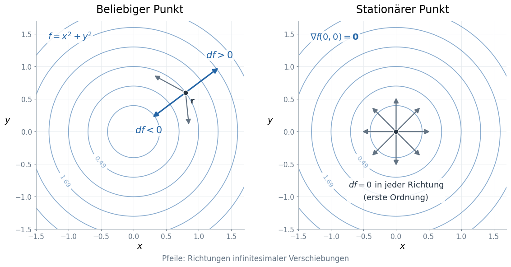
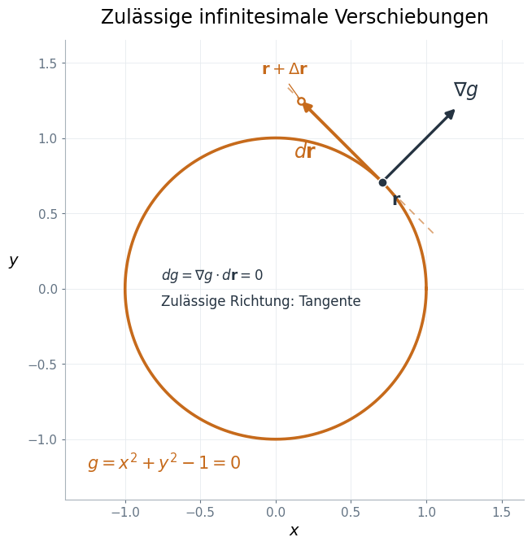
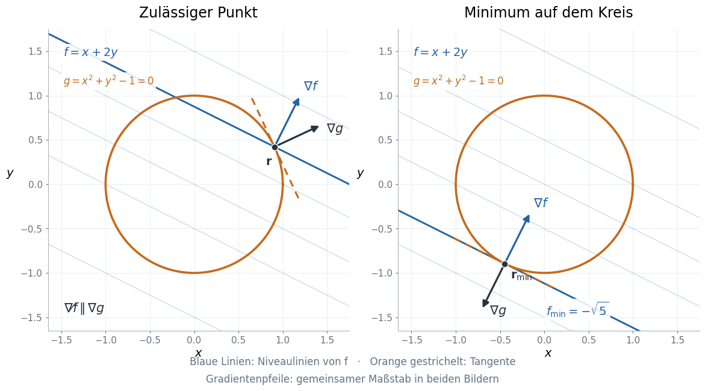

Die Methode der Lagrange-Multiplikatoren#
Wir betrachten zunächst eine Funktion mehrerer Variablen und möchten z. B. deren Minimum unter einer Nebenbedingung finden. Um diese Frage zu beantworten erinnern wir uns zunächst an das Vorgehen ohne Nebenbedingung.
Extrempunkte einer Funktion mehrerer Variablen#
Wir wählen zunächst einen beliebigen Punkt und fragen: Wie ändert sich der Funktionswert, wenn wir uns von diesem Punkt aus ein kleines Stück in eine beliebige Richtung bewegen? Um diese Frage zu beantworten schauen wir uns das lokale Verhalten der Funktion an.
Wie ändert sich die Funktion in der Umgebung eines Punktes?#
Wir betrachten eine glatte Funktion \(f(x_1,\ldots,x_n)\) und einen Punkt \(\mathbf x\) im Inneren ihres Definitionsbereichs. Eine (kleine) Verschiebung sei \(d\mathbf x=(dx_1,\ldots,dx_n)^{\mathsf T}\). Der lineare Anteil der Funktionsänderung definiert das totale Differential:
Alle partiellen Ableitungen werden am Ausgangspunkt \(\mathbf x\) ausgewertet. Für zwei Variablen lautet diese Beziehung beispielsweise einfach
Das totale Differential beschreibt also, wie sich die Funktion in erster Ordnung ändert, wenn wir uns vom Punkt \(\mathbf x\) aus in eine beliebige Richtung bewegen.
Was muss an einem Minimum geschehen? Gäbe es eine Richtung mit einer von null verschiedenen Steigung, dann wäre eine der beiden entgegengesetzten Bewegungsrichtungen eine Abstiegsrichtung. An einem inneren Minimum muss deshalb
gelten. Ohne Nebenbedingung können wir die \(dx_i\) unabhängig voneinander wählen. Insbesondere können wir nur \(x_1\), nur \(x_2\) usw. verändern. Daher muss jeder Koeffizient im totalen Differential verschwinden:

Skizze 1: Höhenlinien von \(f(x,y)=x^2+y^2\). Am links dargestellten nichtstationären Punkt gibt es Richtungen mit positiver und negativer Steigung. Am Ursprung verschwindet die Änderung erster Ordnung in jeder Richtung.
Dass \(df=0\) gilt, bedeutet nicht, dass sich der Funktionswert bei einem endlichen Schritt überhaupt nicht ändert. Für das dargestellte Minimum ist
für jede von null verschiedene Verschiebung.
Note
Das Verschwinden der ersten Ableitungen ist eine notwendige, aber keine hinreichende Bedingung für ein Minimum. Auch an einem Maximum oder Sattelpunkt kann \(df=0\) gelten. Beispielsweise hat \(f(x,y)=x^2-y^2\) am Ursprung einen Sattelpunkt.
Eine Nebenbedingung schränkt die erlaubten Richtungen ein#
Nun soll zusätzlich eine Nebenbedingung in der folgenden Form gelten:
Wir nehmen an, dass auch \(g\) glatt ist und \(\nabla g\ne0\) am betrachteten Punkt gilt. Die Nebenbedingung beschreibt dort eine glatte Kurve beziehungsweise Fläche. Wir dürfen uns nur entlang dieser bewegen. Für eine solche Bewegung bleibt \(g\) konstant; daher gilt
Die erlaubten infinitesimalen Verschiebungen liegen also tangential zur Nebenbedingung und senkrecht zu \(\nabla g\). Die Größen \(dx_i\) können jetzt nicht mehr alle unabhängig gewählt werden.
Auf dem Einheitskreis \(g(x,y)=x^2+y^2-1=0\) folgt beispielsweise
An einem Punkt mit \(y\ne0\) ist damit \(dy=-(x/y)\,dx\): Die Änderung von \(y\) ist durch die gewählte Änderung von \(x\) festgelegt.

Skizze 2: Auf dem Kreis ist die Tangentenrichtung erlaubt; eine Bewegung in Normalenrichtung verletzt die Nebenbedingung bereits in erster Ordnung. Der Gradient \(\nabla g\) steht senkrecht auf der Tangente.
In der Skizze ist \(\mathbf r=(x,y)^{\mathsf T}\). Der offene Punkt \(\mathbf r+\Delta\mathbf r\) markiert das Ende eines endlichen Tangentenschritts außerhalb des Kreises.
Hier beschreibt \(dg=0\) die Nebenbedingung in erster Ordnung. Ein endlicher gerader Schritt entlang der Tangente liegt im Allgemeinen nicht mehr auf der gekrümmten Kurve. Eine exakt zulässige Bewegung folgt der Kurve selbst.
Am gesuchten Minimum verlangen wir nun nur noch
Deshalb dürfen wir aus \(df=0\) jetzt nicht unmittelbar schließen, dass alle partiellen Ableitungen von \(f\) verschwinden.
Der entscheidende Schritt: eine abhängige Verschiebung eliminieren#
Wir schreiben kurz \(f_i=\partial f/\partial x_i\) und \(g_i=\partial g/\partial x_i\). Am gesuchten Punkt seien \(df=0\) für alle erlaubten Verschiebungen und \(\nabla g\ne0\). Dann ist mindestens eine Ableitung von \(g\) ungleich null. Wir nummerieren die Variablen so, dass \(g_n\ne0\).
Aus der Nebenbedingung folgt
Die ersten \(n-1\) Verschiebungen sind lokal frei wählbar; \(dx_n\) hängt von ihnen ab.
Wir addieren nun eine Größe, die für jede erlaubte Verschiebung null ist. Für eine zunächst frei wählbare Zahl \(\lambda\) gilt
Wir wählen diese eine Zahl so, dass der Koeffizient der abhängigen Verschiebung \(dx_n\) verschwindet:
Übrig bleibt
Diese Gleichung muss für alle unabhängigen Verschiebungen \(dx_1,\ldots,dx_{n-1}\) gelten. Also verschwinden deren Koeffizienten ebenfalls. Zusammen mit der bereits durch unsere Wahl von \(\lambda\) erfüllten letzten Gleichung erhalten wir
Die Hilfsgröße \(\lambda\) heißt Lagrange-Multiplikator. Für eine Nebenbedingung benötigen wir genau einen Multiplikator. Das Minuszeichen ist eine Konvention; mit \(df+\lambda\,dg\) ändert sich lediglich das Vorzeichen von \(\lambda\).
Geometrische Bedeutung und Lagrange-Funktion#
In Vektorschreibweise lauten die Bedingungen
Am eingeschränkten Extremum hat \(\nabla f\) keine Komponente entlang der erlaubten Tangentenrichtungen. Er liegt in der Normalenrichtung der Nebenbedingung: Die beiden Gradienten sind parallel oder antiparallel; auch \(\nabla f=0\) ist möglich. Der Gradient von \(f\) muss unter einer Nebenbedingung also nicht selbst verschwinden.

Skizze 3: \(f(x,y)=x+2y\) auf dem Einheitskreis. Links kann sich \(f\) entlang des Kreises noch in erster Ordnung ändern. Am Minimum rechts berührt eine Höhenlinie von \(f\) den Kreis; \(\nabla f\) und \(\nabla g\) sind entgegengesetzt gerichtet.
Wir können die hergeleiteten Gleichungen kompakt in einer Funktion zusammenfassen:
Ihr vollständiges Differential ist
In diesem erweiterten Variablenraum behandeln wir \(x_1,\ldots,x_n\) und \(\lambda\) als unabhängige Variablen. Die Stationaritätsbedingungen lauten
Damit haben wir \(n+1\) Gleichungen für \(n+1\) Unbekannte. Wir suchen einen stationären Punkt von \(\mathcal L\); \(\mathcal L\) muss dort kein Minimum besitzen. Ob die gefundene Lösung ein Minimum von \(f\) unter der Nebenbedingung ist, prüfen wir anschließend.
Beispiel: ein Minimum auf dem Einheitskreis#
Für das Beispiel aus Skizze 3 ist
Die drei Gleichungen sind
Es folgt \(y=2x\) und damit \(5x^2=1\). Wir erhalten zwei Kandidaten:
Die Funktion nimmt auf dem geschlossenen, beschränkten Kreis ein Minimum und ein Maximum an. Da \(\nabla g\ne0\) auf dem gesamten Kreis gilt und die beiden Kandidaten alle stationären Punkte erfassen, ist
Am Minimum ist \(\lambda=-\sqrt5/2\) und \(\nabla f=(1,2)^{\mathsf T}\ne0\). Entscheidend ist, dass die Steigung entlang des Kreises verschwindet.
Anwendung: Energie minimieren und die Normierung erhalten#
Wir betrachten einen reellen linearen Wellenfunktionsansatz
Die Energie einer normierten Wellenfunktion wird durch \(f(\mathbf c)=\mathbf c^{\mathsf T}H\mathbf c\) beschrieben; die Nebenbedingung ist
Mit der Lagrange-Funktion
folgt für reelle symmetrische Matrizen \(H\) und \(S\)
Multiplikation mit \(\mathbf c^{\mathsf T}\) und Verwendung der Normierung zeigen, dass \(\lambda\) gerade die Energie \(E\) ist. Damit erhalten wir die Säkulargleichungen:
Für eine linear unabhängige Basis ist \(S\) positiv definit. Der kleinste Eigenwert liefert das Minimum der Energie im gewählten Ansatzraum. Die Normierung ist damit ein konkretes Beispiel für genau die Nebenbedingung, die wir oben allgemein behandelt haben.